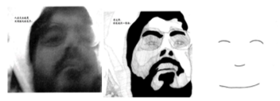
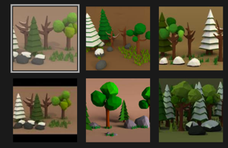
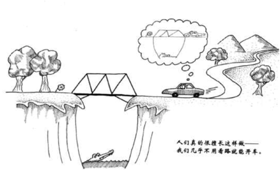
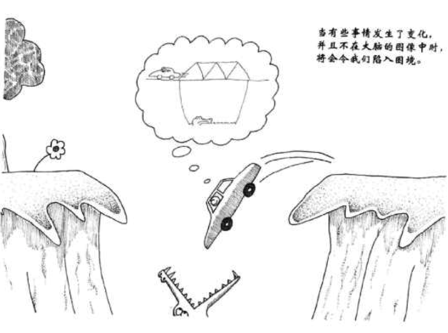
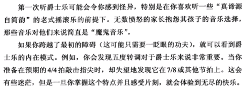

快乐之道 - 人脑的模式
模式
人脑会不自觉地搜寻模式的存在，比如下面这三张人脸图：

如果我们故意地将第二张图思考成不是一张人脸，而是一片黑色的图鸦和一些毫无章法的线条。这完全可能，但不容易做到，模式总是控制了你的大脑，或者说人脸模式识别深深的扎根在你的大脑里面了，已经达到了连第三张图片都要识别成一张人脸，甚至你能因为前两张图片而想像到第三张脸上有很多胡子。
这就是人脑，它总是不断寻求一种模式去理解这个世界，也许是偷懒。
由于这种模式，低模艺术得以发展：

你会下意识地觉得上面这些都是树，但实际它们不存在于真实的世界里。人脑使用模式识别，将每一种模式抽像成非常简单的图标。
好与不好
这给世界的交流提供了非常伟大的便利，但同时也产生了不便之处。
人们下意识地开车回家，甚至不需要看路：

当事情发生了变化时，并且大脑未来得及存储变化的图像时，将会陷入困境，甚至灾难：

所有都是模式
起初人脑认为所有信息都是没有规律的，人脑通过不停吸收重复或者类似的信息，并逐渐将它们模式化后，信息就变得有规律。
就好比书中说的：

当年刚开始听到摇滚时也会觉得怪异，但当我的大脑理解了主流的几种乐器融合在一起后的节奏感，我开始觉得摇滚像生命一样激动人心。
一旦我们发现一种模式，就会在这种模式地重复出现过程中享受到快乐。